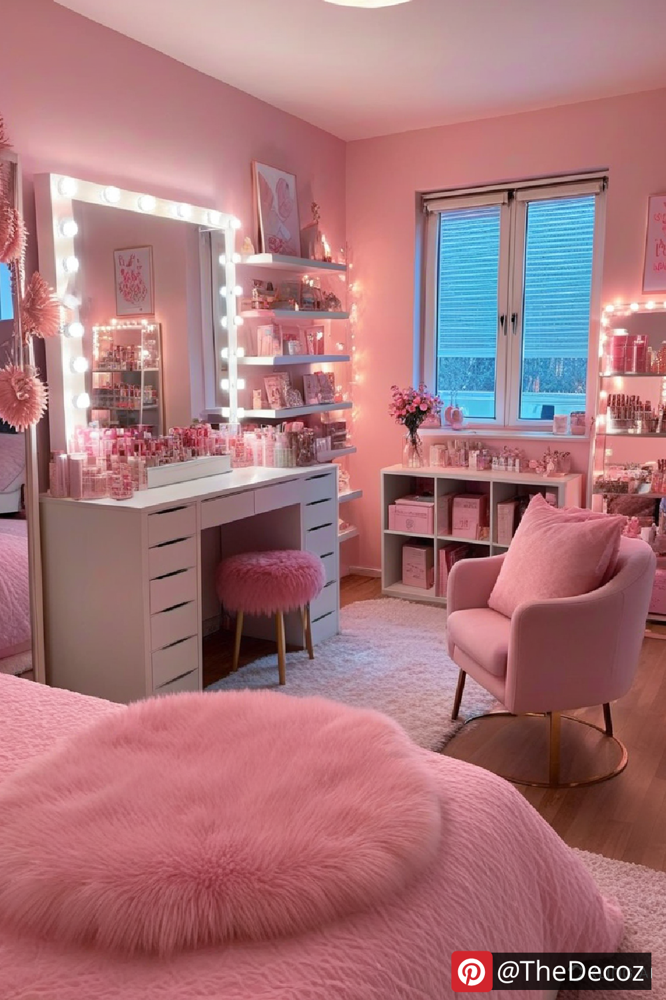

Creating a well-decorated beauty room is essential for anyone passionate about self-care, skincare, and makeup. Whether you're a professional makeup artist, a beauty enthusiast, or someone who enjoys pampering themselves, having a beautifully designed beauty room can enhance both functionality and relaxation. In this guide, we will explore innovative beauty room decor ideas that will help you design a space that is both stylish and practical.
The color scheme of your beauty room sets the mood and ambiance. Soft pastels such as blush pink, lavender, or mint green create a calming and feminine vibe, while neutral tones like beige, white, or gray offer a modern and sophisticated touch. If you prefer a glamorous aesthetic, consider incorporating gold, rose gold, or silver accents to elevate the elegance of your space.
A well-designed vanity table with ample storage is the heart of any beauty room. Choose one with multiple drawers to organize your makeup, skincare products, and accessories. Pair it with a comfortable, stylish chair that complements your decor.
To keep your beauty room neat and tidy, invest in practical storage solutions such as:
Acrylic organizers for makeup and brushes
Floating shelves for perfumes and decorative items
>Drawer dividers for smaller beauty products
A rolling cart for easy access to frequently used items
A full-length mirror is perfect for checking your outfit and overall look. Additionally, good lighting is crucial for makeup application. Consider LED vanity mirrors, Hollywood-style bulbs, or ring lights to ensure optimal illumination.
Personalize your beauty room with framed art, inspirational quotes, or aesthetic prints that reflect your personality and style. Gallery walls featuring fashion or beauty-themed artwork add a chic touch.
Adding plants or fresh flowers can breathe life into your beauty space. Low-maintenance indoor plants like succulents or artificial floral arrangements provide a refreshing and elegant atmosphere.
Incorporate luxurious accessories like decorative trays, crystal perfume holders, and designer candle jars to enhance the overall aesthetic of your beauty room.
If you have a small beauty room, use space-saving techniques such as:
Wall-mounted storage to free up floor space
Foldable furniture for versatility
Multi-purpose decor like a mirrored cabinet for storage and reflection
To make your beauty room truly unique, consider adding personal touches like customized nameplates, a cozy rug, or a scented diffuser for a spa-like ambiance. Your beauty space should reflect your style while remaining functional and inviting.
By carefully planning your beauty room decor, you can create a luxurious and inspiring environment that enhances your daily self-care routine. Whether minimalistic or glamorous, your beauty room should be a place where you feel relaxed, confident, and beautiful.
